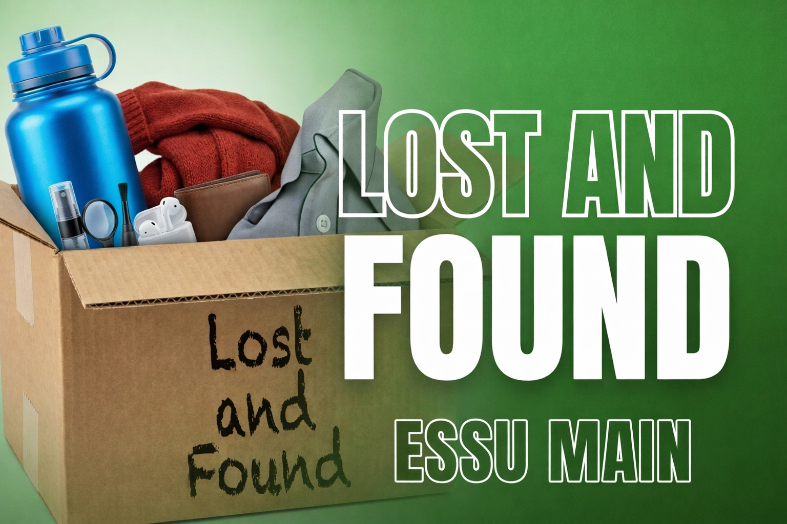

The “Lost and Found – ESSU Main” platform is a centralized digital system designed to efficiently manage lost and found items within the campus. Its primary purpose is to provide a reliable and organized space where users can report missing belongings or submit items they have found. By digitizing the traditional lost-and-found process, the system minimizes confusion, reduces time spent searching, and increases the likelihood of successful item recovery.
The platform is built with a user-centered approach, ensuring that all features are accessible, clear, and easy to navigate. It allows users to browse listings, filter items based on categories, and view detailed descriptions that help in identifying belongings. Each entry includes essential information such as the item name, description, date, and location where it was lost or found. This structured format ensures consistency and improves the accuracy of matching lost items with their rightful owners.
Security and reliability are also key components of the system. The platform encourages responsible use by requiring accurate and honest information from users. While it promotes openness, it also ensures that sensitive details are handled carefully to protect the privacy of individuals. This balance helps maintain trust among users while ensuring that the system remains effective and dependable.
In addition, the platform supports continuous updates, allowing users to modify or remove their posts once items are claimed or returned. This keeps the system clean, relevant, and up-to-date. Over time, it also builds a record of successful recoveries, demonstrating the effectiveness of the platform and encouraging more users to participate.
The “Lost and Found – ESSU Main” platform is designed to be simple, accessible, and easy to use for all members of the campus community. Whether you are a student, faculty member, or staff, the system provides a convenient way to report and search for lost items without hassle. Its user-friendly interface ensures that even first-time users can navigate the platform with ease.
For those who have lost an item, you can begin by visiting the Report Lost section. Here, you will be asked to provide important details about your missing belonging, such as the item name, description, date it was lost, and the last known location. Providing accurate and detailed information increases the chances of successfully finding your item, as it helps others easily identify and match it with found listings.
If you have found an item, you can contribute to the community by going to the Report Found section. Simply enter the necessary information, including where and when the item was discovered, along with a clear description. It is important to avoid including overly specific details that only the rightful owner should know, as this helps ensure proper verification during the claiming process.
In addition to reporting items, users can explore the platform by visiting the Browse Items page. This section displays all active lost and found listings, allowing users to search and filter items based on keywords, categories, or dates. Regularly checking this page can significantly improve your chances of finding a match, especially if your item was recently reported by another user.
Once a match has been identified, users can follow the provided instructions to coordinate the return of the item. After the item has been successfully claimed, it is encouraged to update or remove the post to keep the system accurate and organized. By following these simple steps and actively participating, everyone helps maintain a reliable and efficient lost-and-found system for the entire ESSU Main community.